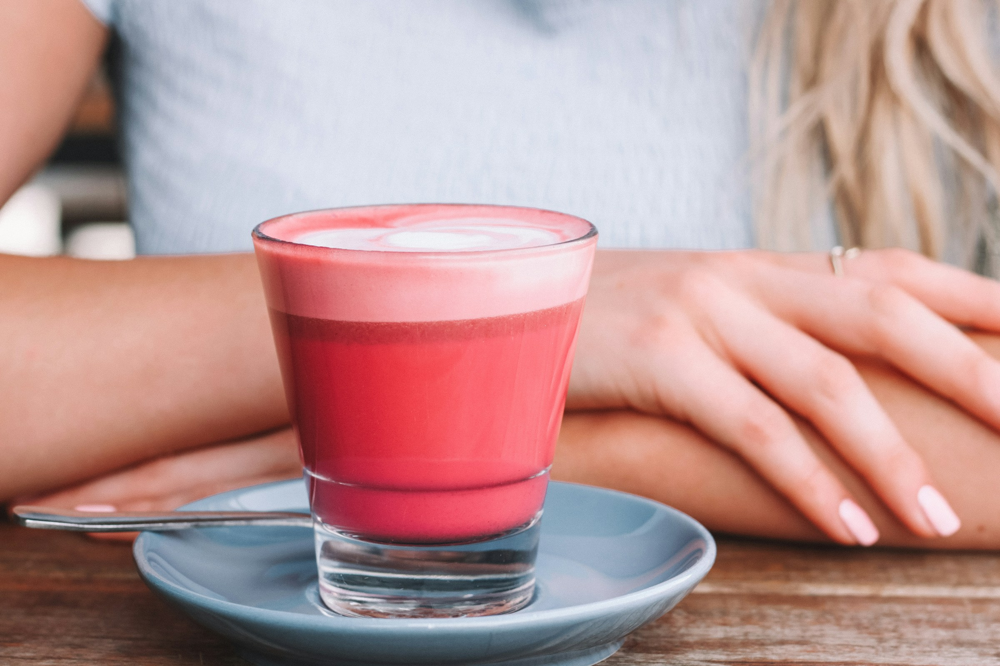

Pink Pony Beach Cafe
Stockholms mest inklusiva och färgglada beach cafe

Välkommen till Pink Pony Beach Cafe
På Pink Pony Beach Cafe är alla drycker och desserter rosa. Njut av en rosa Cappuccino eller varför inte en rosa drink. Skulle du vara sugen på något sött har vi rosa crepes, macaroons, kanelbullar och mycket annat. Vi hoppar gärna på nya trender men vi gör det på vårt rosa sätt. Är du sugen på mat har vi riktigt goda sallader, självklart med rosa inslag. Alla är välkomna till Pink Pony Beach Cafe och det är extra viktigt för oss att ni känner er hemma.